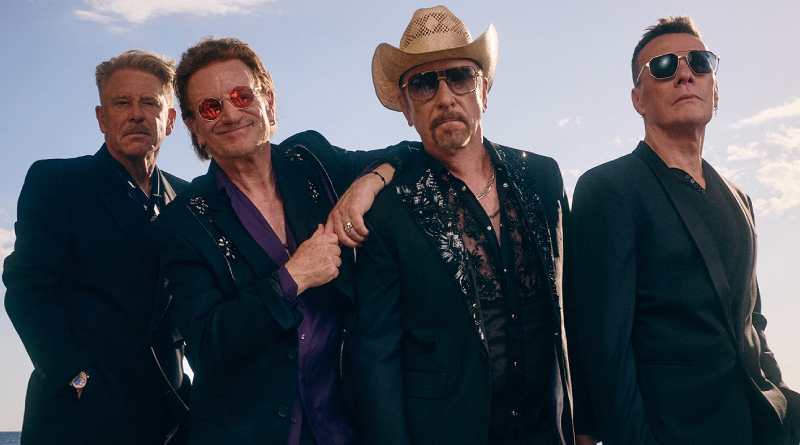

VISIONART
Un festival per als apassionats del cinema i la música.
Un festival per als apassionats del cinema i la música.
Entra dins del món del cinema. Descobreix de prop com es construeix la màgia audiovisual amb la recreació d'un set de rodatge d'una pel·lícula de Netflix. Explora els detalls de l'escenografia, la il·luminació i els elements que donen vida a una història davant de les càmeres.
Una mirada a la ment d'un dels grans directors del cinema contemporani. Endinsa't en l'univers creatiu de Christopher Nolan en una xerrada dedicada a la seva manera d'entendre el cinema. Descobreix els secrets que hi ha darrere de les seves narratives complexes.
Cada disc amaga una història. Troba la teva.Submergeix-te en un univers de música i nostàlgia amb una subhasta de vinils per a col·leccionistes i amants del so analògic. Des de peces emblemàtiques fins a edicions especials, cada disc és una oportunitat per endur-te a casa.

El grup és conegut pel seu estil musical, que combina el rock amb elements de música alternativa i lletres que tracten temes socials, polítics i personals. En aquest festival ens fan un avançament del seu nou disc i també ens endinsarem en l'experiència audiovisual que han utilitzat en la seva última gira!

Considerat una de les figures més influents de la música cinematogràfica contemporània. Ha revolucionat les bandes sonores combinant instruments orquestrals amb sons electrònics per crear atmosferes immersives i emocions intenses. Ens durà en un viatge per els seus temes mé reconeguts al món del cinema, alhora que ens parla sobre com és compondre una banda sonora!